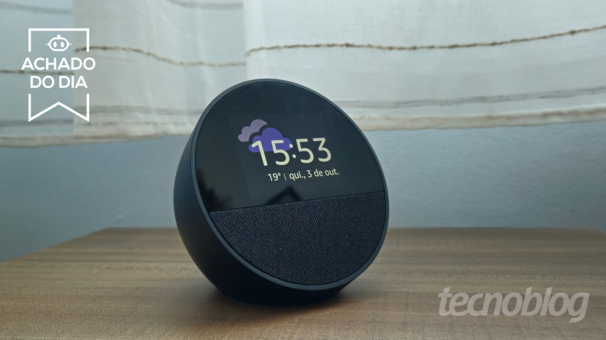

Echo Spot e Kindle Paperwhite têm menor preço da Amazon em meses
Postado 04 outubro 2024

Hoje, o Echo Pop, smart speaker mais barato da linha Amazon Echo com Alexa, está saindo por apenas R$ 224 em oferta. Junto com ele, o leitor digital Kindle Paperwhite também está com desconto histórico, saindo por R$ 611 à vista.
Veja a lista destes e outros dispositivos Amazon em oferta:
- Echo Pop com Alexa por R$ 224 à vista
- Kindle Paperwhite por R$ 611 à vista
- Echo Spot com Alexa por R$ 431 à vista
- Echo com Alexa por R$ 521 à vista
As vantagens do Kindle Paperwhite em oferta
Se você gosta do Kindle padrão, mas busca uma opção de leitor digital um pouco mais confortável para os olhos, a versão Paperwhite pode valer o investimento. Além do armazenamento de 16 GB, ela também oferece a possibilidade de ajustar a temperatura da tela, podendo deixá-la mais fria ou mais quente dependendo da sua preferência. Ele ainda é resistente à água (IPX8).
Quais os recursos da linha Amazon Echo com Alexa?
Primeiro, temos o recém-lançado Echo Spot, cujo design lembra o Echo Pop (que também está em promoção), mas com uma telinha que mostra as horas e a temperatura na maior parte do tempo. Assim, ele acaba sendo a opção ideal para quem buscava um despertador inteligente para completar seu kit smart home.
Depois, o Echo Pop é o dispositivo Amazon Echo mais barato do momento, ideal para quem ainda está começando a montar a própria casa inteligente. Com ele, você pode aproveitar todas as funções básicas da Alexa que não exigem telinha, como programar rotinas com smart lâmpadas (e outros gadgets), configurar alarmes e lembretes e fazer listas de supermercados, entre outras tarefas de assistente virtual.
Também vale a pena conferir o Echo de 4ª Geração. Além de ser maior, ele se destaca por oferecer um som mais potente que o dos outros modelos. Os testes do Tecnoblog comprovaram que seu som é alto com bastante presença nos graves.
Voltar